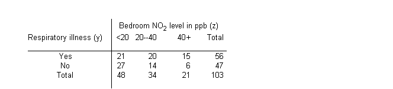
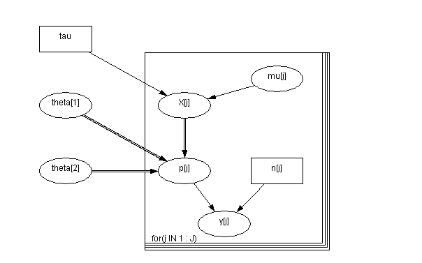

![[air0]](air0.bmp) Air: Berkson measurement error
Air: Berkson measurement error
Whittemore and Keller (1988) use an approximate maximum likelihood approach to analyse the data shown below on reported respiratory illness versus exposure to nitrogen dioxide (NO
2
) in 103 children. Stephens and Dellaportas (1992) later use Bayesian methods to analyse the same data.

A discrete covariate z
j
(j = 1,2,3) representing NO
2
concentration in the child's bedroom classified into 3 categories is used as a surrogate for true exposure. The nature of the measurement error relationship associated with this covariate is known precisely via a calibration study, and is given by
x
j
=
a
+
b
z
j
+
e
j
where
a
= 4.48,
b
= 0.76 and
e
j
is a random element having normal distribution with zero mean and variance
s
2
(
=
1/
t
)
= 81.14. Note that this is a Berkson (1950) model of measurement error, in which the true values of the covariate are expressed as a function of the observed values. Hence the measurement error is independent of the latter, but is correlated with the true underlying covariate values. In the present example, the observed covariate z
j
takes values 10, 30 or 50 for j = 1, 2, or 3 respectively (i.e. the mid-point of each category), whilst x
j
is interpreted as the "true average value" of NO
2
in group j. The response variable is binary, reflecting presence/absence of respiratory illness, and a logistic regression model is assumed. That is
y
j
~ Binomial(p
j
, n
j
)
logit(p
j
) =
q
1
+
q
2
x
j
where p
j
is the probability of respiratory illness for children in the jth exposure group. The regression coefficients
q
1
and
q
2
are given vague independent normal priors. The graphical model is shown below:

model
{
for(j in 1 : J) {
y[j] ~ dbin(p[j], n[j])
logit(p[j]) <- theta[1] + theta[2] * X[j]
X[j] ~ dnorm(mu[j], tau)
mu[j] <- alpha + beta * Z[j]
}
theta[1] ~ dnorm(0.0, 0.001)
theta[2] ~ dnorm(0.0, 0.001)
}
Data
( click to open )
Inits for chain 1
Inits for chain 2
( click to open )
Results
A 1000 update burn in followed by a further 10000 updates gave the parameter estimates
![[air3]](air3.bmp)